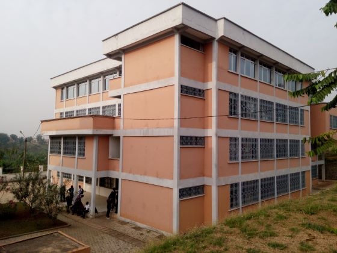

L’Ecole Nationale Supérieure Polytechnique de Yaoundé 1 est créée en 1971. Elle fait partie de l'Université
de Yaoundé I à et accueille des étudiants provenant de l'Afrique subsaharienne. Elle forme des ingénieurs
dans plusieurs spécialités dont le génie mécanique, le génie industriel, le génie civil, le génie électrique
et télécommunication, l'informatique, le génie météorologique et la mécatronique. L’ENSP-UY 1 offre
aujourd’hui de formations allant du Diplôme Universitaire de Technologie dans le domaine du bois (DUT, Bac+ 3)
au Diplôme d’Ingénieur de Conception (DIC, Bac+ 5) d’une part et de master recherche puis de Doctorat/Ph.D dans
des axes variés. L'Ecole Nationale Supérieure Polytechnique de Yaoundé a pour missions de former tant sur le
plan théorique que pratique des :
L'ecole nationale superieure polytehcnique s'appuie sur les valeurs suivantes: Ingénieurs Technologues ;
Ingénieurs de Conception; Docteurs.
